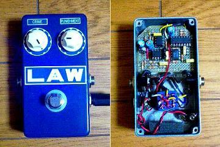
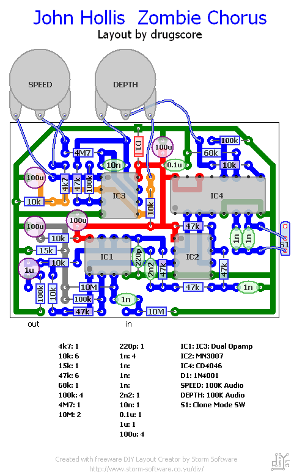

John Hollis Zombie Chorus
2007年07月14日 カテゴリー：自作エフェクター（アナログ）

John Hollisさんが考えたらしいZombie Chorusというコーラスです。GEOの回路図を参考にしています。何やら"reincarnation of the EH Small Clone and Roland CE-1"らしいです。
▽回路図
GEO→Zombie Chorus プロジェクトファイル(pdf)
MXRサイズにするのは結構大変でした。私はスイッチはナシにしてソケットで切り替えるようにしました。少しだけクロックノイズ（SPEEDのテンポの合わせて出るボツボツ音）が出ていたので、 SPEEDポットの配線を短くしたりINとOUTの線をシールド線にしたりしました。するとまったくクロックノイズは聞こえなくなりました。ただ MN3007のせいかシャーというノイズは少し残っています。まぁギターを弾いている間は気にならない程度なのでよしとします。
回路はコーラスとしては最小でしょう。でも充分使えます。やはり部品が多ければいいってもんじゃないですね。CE-1風の薄いコーラスと SmallClone風の厚いコーラスが切り替えられます（両方とも使ったことないので似てるかどうかはわかりません）。少し金属的で冷たい印象もありますが、私は好きな音です。SPEEDツマミをMAXにするとリングモジュレーター風の怪しい音が出て面白いです。ホントにゾンビが出てきそうです。
写真では結構明るい青ですが実際は結構暗い青です（スプレー缶にはウルトラマリンと書いてあった）。ノブや文字もクリーム色です。LEDは青の平べったいやつにしてみました。なのでかなりProco RAT風に光ります。Procoがこんな感じにシリーズを出したら売れる…かもしれません。
追記：LFOはバイアスを別にするというのをhammer.ampage.orgで見たので、新しいレイアウトで作り直しました。
▽新レイアウト（旧レイアウトは削除）

抵抗やコンデンサを追加してます。これだと特に対策をしなくてもクロックノイズは入りません。でもシャーをいうノイズはどうしても消えないみたいです。あとそういえばIC1はNJM4580ではダメみたいです。TL072やNJM4558では大丈夫でした。
再追記：シャーをいうノイズはギターのボリュームを0にしても（入力レベルに関係なく）入るみたいです。なので入力をできる限り大きくした後、全体のレベルを下げてノイズを減らすことを考えました（ホントは高音域だけでやる方法らしいです）。具体的にはR4/R3の比率を上げ、最後にトリマー（またはボリュームポット）でレベル調整します。自分はR4を220kΩにしました（計算上ノイズが-6dBくらいになるのかな？）。もっと大きくした方が効果が出るけど、やりすぎると歪みそうです。